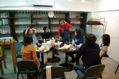

レポート >
vol.2は少人数でしたが、その分濃いトークができたと思います。
覚えてる範囲のレポです。わかる人は追記・修正お願いします。
レポート書いてあるBlog
- 日時：2008/10/18(土) 13:30~18:00
- 場所：AIPcafe
- 参加人数：10人
大まかな流れ- 13:30〜 話したい人／質問内容／順番決め
- 14:00〜 ライトニングトーク
- 「MTでの運用サイトの紹介」 (sozoさん)
- 「動画のマニュアル作成」 (我流@CGFM)
- 「サイトサーチランキング」（InazumaTVの大久保さん)
- 「MTのライブコーディング」 (BULANCOの山田さん)
- ディスカッション「アクセス解析について」
- 〜18:00 次回の日時決定と次回のお題出し
- 18:30〜 懇親会
ざっくりした内容「MTでの運用サイトの紹介」 (sozoさん)
- MTで運用してるサイト： 福岡の生活情報サイト「えりあす」
- 西日本新聞が発行する生活情報誌のWebサイト。隔週土曜日に発行。
- 発行部数はおよそ190,000部
- MTで複数のブログを一つのドメイン内で運用
- MTに切り替えてPV(ページビュー)が5倍に増加
- 携帯サイトもMTで運営
「動画のマニュアル作成」 (我流@CGFM) 前回見せた動画の操作マニュアルを作成したソフトの紹介 - Jing
- フリー
- 評価 ★★★
- とても簡単。マイクで音声も撮れる。
ただ５分だけしか録画できないのが難点。
説明不要or音声入りの短い操作デモムービー向け。
- Mac OS X 10.4.9以降 /
Windows XP/ Vista (.NET Frameworkが必要)
- 単体SWFのみ
- Wink
- フリー
- 評価 ★★★★☆
- 録音可能。
動画に細かい説明を書いたり編集できる。
ただ説明で日本語(2バイト)文字の扱いがまだまだで文字化けをよく起こす。（結構ストレス）
どのコマで何秒表示とか、クリックボタンとかの機能はある。
- ヌーラボさんがBacklogの導入マニュアル[No1.課題登録編][No2.ファイル共有編]で使ってました。
- Windows 98/ Me/ 2000/ XP/ Vista , Linux
- SWF,EXE,PDF
- Camtasia Studio 5 (カムタジア スタジオ)
- Adobe Captivate 3
- 製品版 90,300円(税込) アカデミック版 29,400円(税込)
- 評価 ？？？？？
単純な操作ムービーだけでなくて、実際に入力させたりクリックさせ、分岐したメッセージを出せる。それで研修やトレーニングに使えるらしい。また操作の記録も取れる。
eラーニングみたいに正解/不正解などにも活用できるとか。
素材としてSWF、fla、FLVなども読み込み可能。
使った事無いのでわかりません。。。体験版30日試用可能。 - Windows(XP/Vista)
- ※Mac OS X + Parallels Desktop + Windows XP ならば実行可能らしいので、
コヒーレンスモードならMacの操作も作成可能？
- SWF形式のみ
- 最近はフィード(RSSやAtom)さえ出力していれば、sitemap.xml やRORは不要
- RORとは？ XML形式のサイトマップ。全てのロボット型検索エンジンに有効。
- 参考サイト：http://dokodemo.rankuappu.com/syono6
- Google、Yahooのwebマスターは必須
- Advanced Web Ranking
http://www.advancedwebranking.com/
- 使っているのはProfessional版 $199
- 年単位のライセンスで次年度以降は確か$50前後。
- 複数年契約割引あり。
- 1ヵ月のデモ版がダウンロード使用可能。
- 自サイトの他、別のサイトも登録して、キーワードに対する検索順位を自動で記録していく
- これで見るとYahooの順位変動は最近ひどい。
- 一喜一憂しない方が精神的に良い事を自分のサイトを例にしてクライアントに教えてあげよう
「MTのライブコーディング」 (BULANCOの山田さん)
- わざわざMacBookのディスプレイコネクタを取りに帰ってたのに違ってたw
- ブランコさんのサーバー上のMovable Typeで、有常さんのココナッツジャムのHTMLを使って、新着情報をMTで更新できるまで実際に試してみた
ディスカッション「アクセス解析について」他のトークの段階からちょこちょこ話題に上がったアクセス解析の事とかをそれぞれの立場や経験からトークしました。
- Google Analyticsのフィルタで自分のアクセスは弾くことができる
- 方法１：固定IPアドレス指定
- 方法２：セッション、クッキーでの指定
- 携帯サイトではJavascriptによるGoogle Analyticsが使えない
- IMGタグ埋め込みのカウンター形式
- 面白い無料携帯向けアクセス解析サービス：なかのひと
- すべてのページをPHP等にして独自実装
- サーバーの生ログ解析（レンタルサーバー付属のアクセス解析等）
- 生ログをダウンロードできればローカルで解析するのも手
- Google Analyticsと生ログ解析系では数字がずれる。
- 両方見る事が大事
- 携帯やJavascriptをOFFにしてる人の分で数字がずれる
- 携帯サイトはターゲット・利用ユーザーが中高生など若いほど、PCよりもPVが上回る
- そもそもアクセス解析／アクセス数が目標・目的ではない（フライトシステム山本さん）
- サイト評価の指標はコンバージョン率だったり、売り上げ増加、問い合わせ数増加など
- 見られる事に超した事は無いが、アクセス数が目的になるのはサイトによってはおかしい
- コンテンツを充実させれば、問い合わせに対する業務のコストが下がるはず。
（質問やクレームなどへの対応など）
- アクセス解析はあくまで参考にする指標であるべき。
- Google AnalyticsはFlashコンテンツの解析にも使える
その他、トーク中に出た質問とか用語とか- Ping ： 更新Ping。Blogなどには標準であり、更新した事を通知してくれる
- フィード ：RSSやAtomなどの更新情報のXMLファイルの事。
- ほかいろいろ
今回の反省・今後の事
- 話したい人は積極的に話せるような雰囲気に。
- 仕出しはもっと早めに予約しておくべきだった。
- プロジェクター２台ぐらいあれば、複数のテーブルでそれぞれ別の話題でトークするとかできるかも。
次回のお題や日時について次回は 2008/11/15(土)の昼で仮決め。申込受付はまた行います。 行う内容はMLなどで皆に聞いていこうと思います。 |
|
{kind=link}
{kind=link}